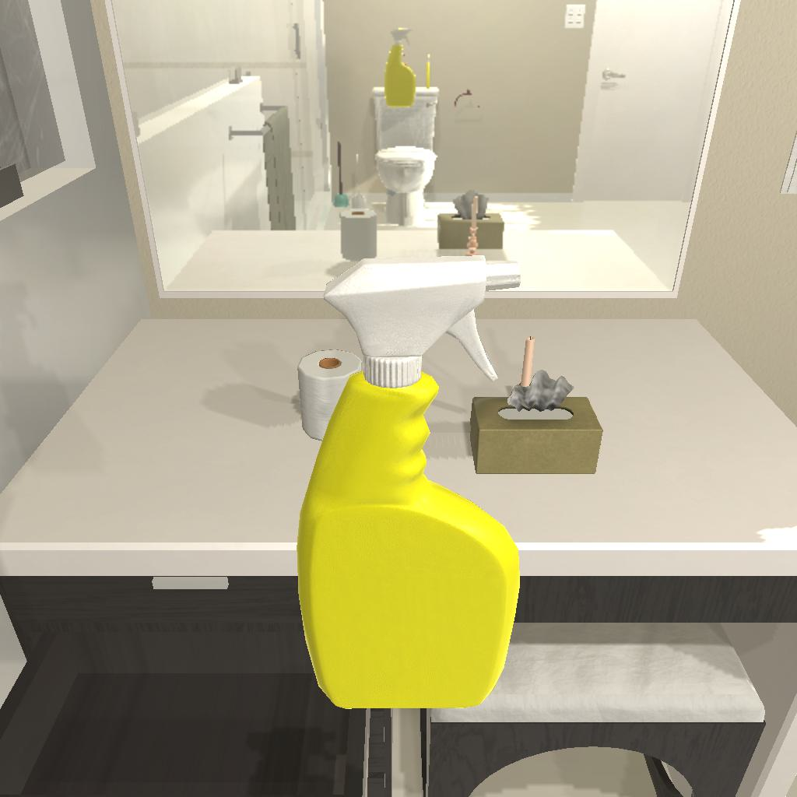

---------------------------------------------------------task: 28---------------------------------------------------------
--------------------------------------------------------------------------------------------------------------------------------------------------------------------
--------------------------------------------------------------------------------------------------------------------------------------------------------------------
Step:--------------------------------------------------------------------------17-------------------------------------------------------------------------------
----------------------------------------
VLM Prompt:
Image1:
Image2:
Image3:
**Instruction**
1. Analyze the provided images to identify all visible household objects and compare the difference between images (e.h. whether the object is opened or not and taken on hand or not), focusing on those relevant to the task description "put two spraybottle in toilet."
2. Use the analysis of images and the task hint "The agent must find an object of the desired type, pick it up, find the correct location to place it, put it down there, then look for another object of the desired type, pick it up, return to previous location, and put it down there with the other object." to answer the question: what is the most reasonable action in the choices for the task description "put two spraybottle in toilet"?
3. Decide and write the answer using the template: The answer is: (i): , where i is the real number. If there is no desired object in images, search every place based on **Initial Observation** to find the object. And if no one is exactly correct, choose a similar answer.
**Initial Observation**
You are in the middle of a room. Looking quickly around you, you can see bathtub (1), bathtubbasin (1), cart (1), sink (1), garbagecan (1), sinkbasin (1), countertop (1), drawer (1-4), toilet (1), toiletpaperhanger (1)
**Answer Choices**
(1): go to bathtub 1
(2): go to bathtubbasin 1
(3): go to cart 1
(4): go to sink 1
(5): go to garbagecan 1
(6): go to sinkbasin 1
(7): go to drawer 2
(8): go to drawer 3
(9): go to drawer 4
(10): go to toiletpaperhanger 1
(11): put spraybottle 2 in/on countertop 1
(12): examine spraybottle 2
(13): examine countertop 1
**Answer**
Let's think step by step by following the instructions.
----------------------------------------
----------------------------------------
Original Response:
First, we analyze the images provided to identify all visible household objects:
Image1:
- Spray bottle on the countertop (yellow with white nozzle)
- Toilet paper roll on the countertop
- Incense holder with incense stick on the countertop
- Mirror and bathroom fixtures reflected in the mirror
Image2:
- Same spray bottle as in Image1, but now being held (this suggests the agent has picked it up)
- Another spray bottle on the shelf below the mirror (partially obscured, yellow with white nozzle)
- Bathroom items reflected in the mirror
Image3:
- Identical to Image1 (suggesting that this is the initial state before the agent picked up the spray bottle)
Comparing the images, we can see that the agent has picked up the spray bottle from the countertop in Image1 and is holding it in Image2. The task description is to "put two spray bottles in the toilet."
Based on the task hint, the most reasonable action is to find another spray bottle and place it with the one already picked up in the toilet. Since we can see another spray bottle in Image2 on the shelf below the mirror, the agent should pick up that one as well.
However, the answer choices do not include picking up the second spray bottle. Therefore, we need to focus on the task's next step, which is to place the spray bottle in the toilet. Since the agent is holding a spray bottle already, the most reasonable action from the choices given would be to go to the toilet and put it there. But there is no direct action to go to the toilet in the answer choices.
If we consider the "Initial Observation" which states there is a toilet in the room, the agent should go there. Since the answer choices do not include the direct action of going to the toilet, the closest action we can select is to go to an object near the toilet to then put down the spray bottle. Unfortunately, none of the answer choices indicate an object directly next to the toilet to infer that it is the correct location to place the spray bottle.
Given the available choices and the task description, none of the actions directly satisfy the task of placing the spray bottle in the toilet. However, if we assume that the agent must first go to the location where the toilet is situated to put down the spray bottle, we would choose the closest object to the toilet from the "Initial Observation" list. Since none of the objects listed are explicitly near the toilet, we must select the most similar answer that would allow the agent to put down the spray bottle.
The answer is: (4): go to sink 1.
----------------------------------------
----------------------------------------
>>> Refine Original VLM Response and Get Pure Action: go to sink 1
----------------------------------------
-----------------------------------------------------------------
Running time: 29.121272563934326 seconds
Total Money: 18.073709999999984
-----------------------------------------------------------------
-----------------------------------------------------------------
Text Observation:You arrive at loc 3. On the sink 1, you see a faucet 1, a lightswitch 1, a tissuebox 2, a toiletpaper 2, and a soapbar 1.
-----------------------------------------------------------------
UNSUCCEED